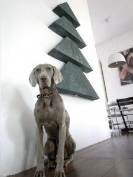

Pinterest
Instagram
ES
EN
DE
☰ Menú
Inicio
La casa
Accesorios
Decorar
Instrucciones
Ilustración
Cantimploras personalizadas
Cuaderno de manualidades y actividades 01
App Not Online Anymore
Blog
Fiestas
Navidad
Pascua
Halloween
Carnaval y disfraces
San Valentín
Cumpleaños
Día de la Madre/Padre
Vuelta al cole
Estaciones
Primavera
Verano
Otoño
Invierno
Qué hacer
Juguetes
Juegos
Imprimibles
Recetas y comida
Decoración
Pintar
Experimentos
Al aire libre
Aprender
Animales
Regalos y joyas
Construir y trucos
Otras manualidades
Material
Papel
Cartón
Rollos de papel
Reciclaje
Piedras
Hojas y naturaleza
Tela, coser y tejer
Inicio
›
Blog
›
Navidad
Navidad
Categoría
Ocasión
Ángeles de papel de Josefa
Ocasión
Adornos de botella perforada
Ocasión
Sellos navideños de hama
Ocasión
Estrellas de rollo de papel
Ocasión
Para Eli: etiquetas de regalo
Ocasión
Calendario de Adviento de casitas
Material
Árboles de papel
Ocasión
Árbol de Navidad de cañas
Ocasión
Adorno de caja de queso
Ocasión
Árbol de pajitas y perlas
Ocasión
Tarjeta de Navidad animada
Material
Calendario de Adviento con conos
Ocasión
Reciclar la punta del árbol
Ocasión
Navidad
Ocasión
Papá Noel de Lego
Ocasión
Estampar con bandejas de corcho blanco
Ocasión
Ángeles para el árbol
Material
Guirnalda de arbolitos de hoja
Comida
Galletas de Navidad
Ocasión
Piñas de Navidad
Ocasión
Calendarios de Adviento de rollos de papel
Cartón
Árbol de Navidad de cartón de este año

Navidad
¡Feliz año nuevo! Happy new year! Frohes neues Jahr!
Papel
Ángel de papel sin pegamento
← Más recientes
Página 2 / 3
Más antiguas →